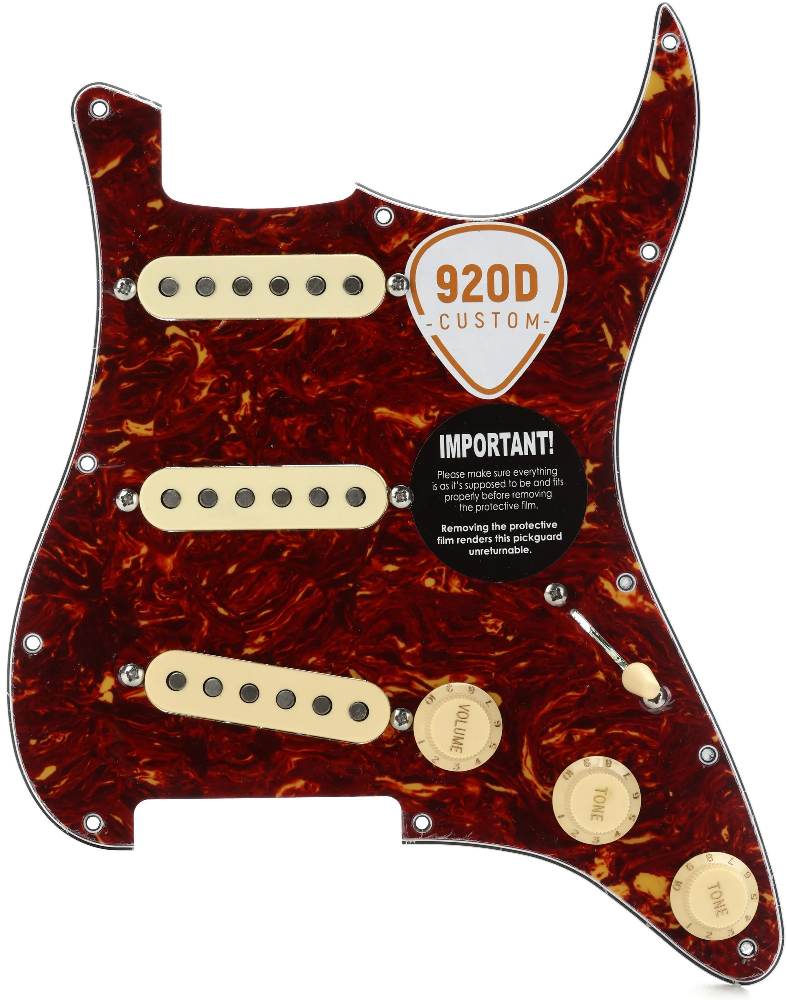
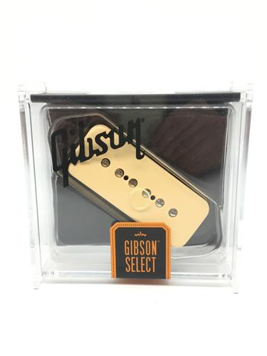
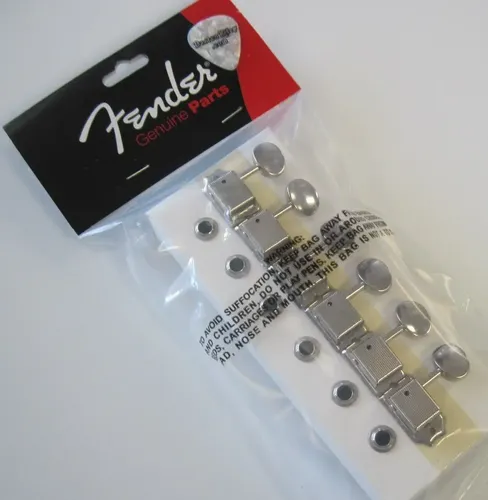
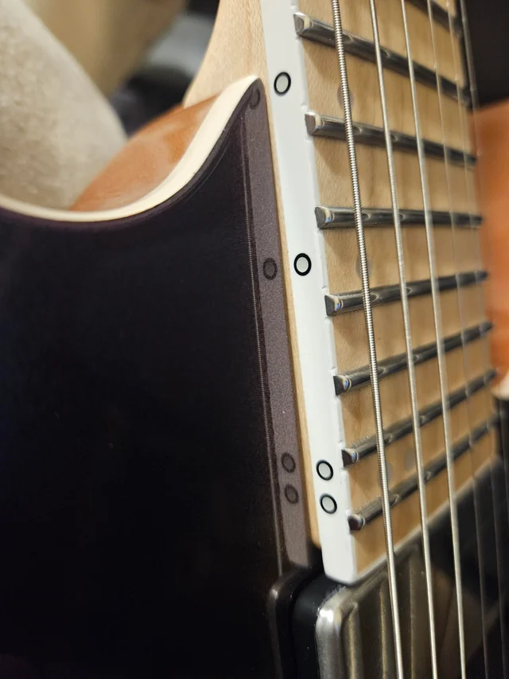
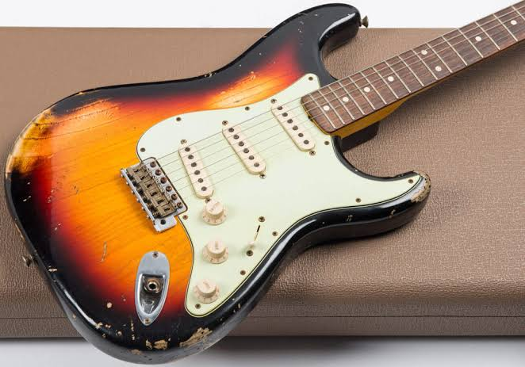
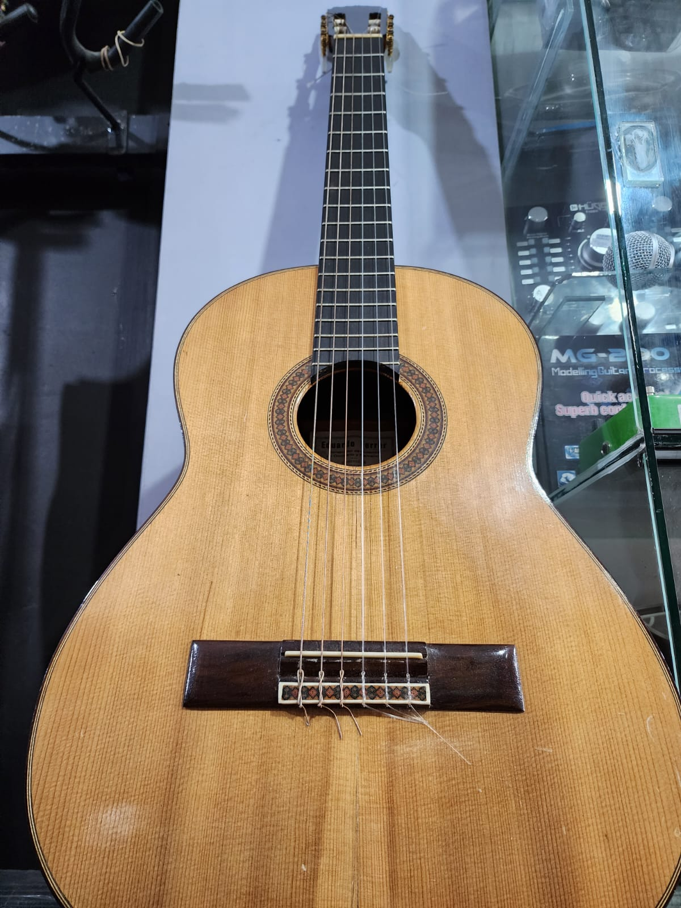

Pickguard Fire '57
Pickguard prearmado, listo para instalar y probar.
USD 150
Encontrá repuestos seleccionados, asesoramiento y servicios pensados para recuperar el sonido y la identidad de cada instrumento.
FindAGem es un espacio dedicado a la compra y venta de piezas para instrumentos vintage. Buscamos conectar músicos, coleccionistas y restauradores con repuestos que merecen volver a sonar.

Pickguard prearmado, listo para instalar y probar.
USD 150

Micrófono de reemplazo con sonido cálido y definido.
USD 120

Juego de seis clavijas para restauraciones de estilo clásico.
USD 85

Encontraron los trastes correctos para mi guitarra y quedó lista para volver a tocar.

La tasación fue clara y me explicaron cada detalle del instrumento.

Recuperaron una guitarra familiar respetando su estética original.